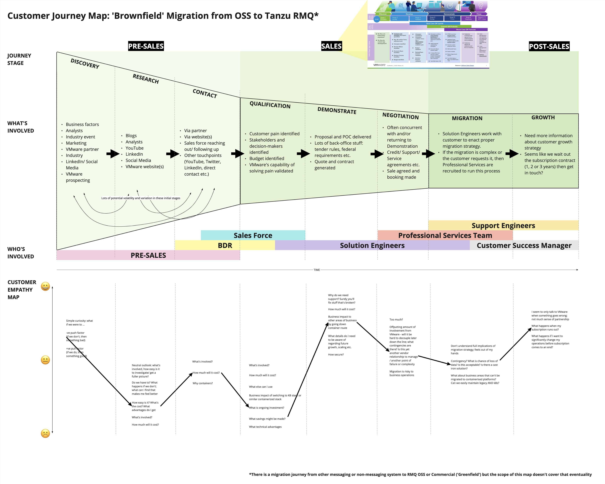
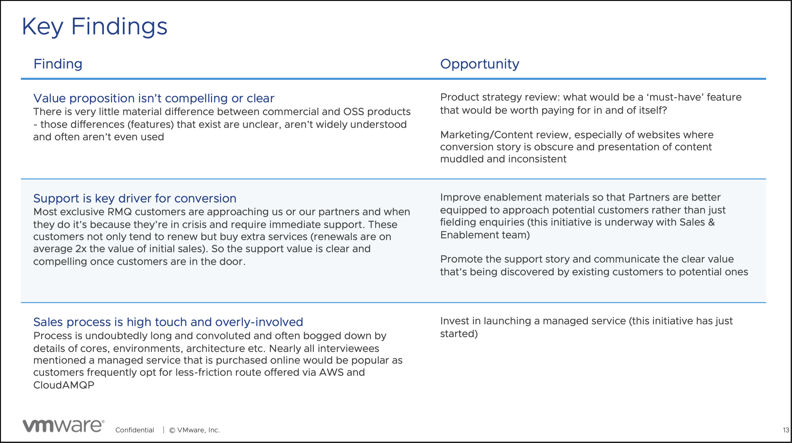

Context
The product wasn't the problem
RabbitMQ is one of the most widely deployed message brokers in the world. Its open-source community is enormous. Its commercial offering — VMware Tanzu RabbitMQ — adds enterprise features, support, and managed deployment. The commercial conversion journey, however, was underperforming.
The assumption was familiar: if the product is good enough, customers will upgrade. But the research told a different story. The value proposition wasn't compelling or clear. Feature differences between OSS and commercial were obscure. And the sales process required more human touch than most customers wanted to give.
Challenge
Understanding a journey nobody had mapped
Commercial conversion for developer tools is not a funnel — it's a journey through communities, documentation, trial experiences, pricing pages, sales conversations, and support interactions. Each touchpoint either builds or erodes understanding of what the commercial product offers and why it matters.
Nobody had mapped this journey holistically. Product marketing owned messaging. Sales owned conversations. Support owned post-sale relationships. Design sat across all of them, able to see the gaps.

What I did
Research, workshops, and uncomfortable findings
I led internal research combining interviews, assumption testing, and a virtual offsite workshop (November 2023) with cross-functional stakeholders. The goal was not to validate existing strategy but to stress-test it against evidence.
Key findings challenged conventional wisdom:
- Support is the conversion driver. Crisis-driven customers who experience VMware support renew at roughly 2× the initial sale value. This story was buried — not promoted, not easy to discover.
- Price isn't the problem; opacity is. "Price itself isn't a problem; the fact it's obscure and requires a lengthy quote process is." Customers compared unfavourably to AWS and CloudAMQP, where managed purchase is low-friction.
- Feature differentiation fails. The differences between OSS and commercial RabbitMQ are real but poorly communicated. Customers can't evaluate what they can't understand.
- Sales process mismatch. High-touch sales works for enterprise but repels the mid-market developers who represent growth.

Evidence
From research to recommendations
The research produced actionable recommendations across product strategy, marketing, partner enablement, and service design:
- Review product strategy with conversion evidence, not assumptions
- Invest in marketing and content clarity — make the commercial value proposition legible
- Promote the support story as a primary conversion driver
- Invest in managed service offerings to compete with low-friction alternatives
- Improve partner enablement so the journey doesn't depend on direct sales alone
This work connected to broader enablement initiatives — including the Intent-Based Guidance Playbook, a 70-page living document codifying how VMware's distributed design team should approach guidance language in admin UX.

What changed
Clarity about where value actually lives
The research didn't produce a redesign — it produced understanding. Stakeholders across product, marketing, and sales had a shared evidence base for decisions that previously relied on intuition. The support-as-conversion-driver insight alone reframed how commercial value should be communicated.
What it proves
Sometimes the most valuable design work is not designing anything. It's the research, facilitation, and synthesis that helps an organisation see its own product clearly — and act on what it finds, even when the findings are uncomfortable.